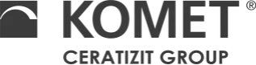
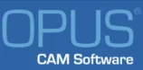

智慧合作
ZOLLER 与合作伙伴携手，致力于以最佳方式满足客户需求。
ANCA
A+B Solutions
凭借超过35年的行业经验，A+B Solutions在生产数据采集与控制解决方案的规划与集成方面拥有全面的专业知识。 作为西门子 PLM 软件等领先供应商的解决方案合作伙伴，A+B Solutions 为客户提供从咨询、规划、项目设计到系统集成及服务的全套解决方案。
A+B Solutions 的解决方案可与多种应用程序对接，作为所有开发、订单和生产数据的枢纽，构建了贯通且统一的数据结构。A+B Solutions 是 ZOLLER 的开发合作伙伴，负责将我们的系统与西门子 NX 和 Teamcenter 进行对接。
Balluff
Camaix
Camaix 公司致力于模具制造、机械制造和汽车制造领域的服务，近年来尤其专注于航空航天技术以及复杂的5轴和6轴加工，并为此开发了专门的解决方案。
通过简单直观的 Mastercam 接口连接 ZOLLER 刀具管理软件，可在 Mastercam 中利用已组装刀具的最新几何形状进行编程，并将数据用于仿真和碰撞检测。
Camtek
位于斯图加特附近魏恩施塔特的Camtek GmbH公司成立于1993年，最初是CAD/CAM系统PEPS的独家经销商。通过与知名机床和控制系统制造商的紧密合作，该公司开发了高品质的后处理器，并持续改进这两套系统。
ZOLLER 为您提供便捷且易于操作的 PEPS CAD/CAM 系统接口。
Delcam
Delcam 是全球领先的现代 CAD/CAM 及设备独立型 3D 测量软件开发商和供应商，服务于制造业。 如今，Delcam 已成为英国最大的 CAD/CAM 软件开发商，并在北美、欧洲和亚洲设有分支机构。Delcam 的产品被 80 多个国家的 50,000 多家企业所采用。 Delcam 产品包括全球领先的 CAM 软件 PowerMILL。通过 PowerMILL 与 ZOLLER TMS Tool Management Solutions的接口，您可以便捷地访问 ZOLLER 庞大的数据库。
DP Technology
DP Technology 是面向广泛制造行业的计算机辅助制造（CAM）软件的主要制造商和供应商之一。 DP Technology 的主力产品 ESPRIT 是一款功能极其强大且品质卓越的数控编程系统，适用于铣削、钻孔、车削、线切割等加工领域，同时也适用于铣车复合中心等多功能机床。
ESPRIT CAM 与 ZOLLER TMS Tool Management Solutions的接口操作简单直观，可轻松实现刀具数据的交换。
Virtual Gibbs
Virtual Gibbs 是一款功能强大且灵活的 CAM 软件，可显著简化 CNC 编程。 其用户友好的界面提高了生产效率，非常适合 CNC 编程员、切削机械师和工程师使用。Virtual Gibbs 支持 2D 至 5 轴铣削、车削、MTM 和线切割，可实现快速、可靠的编程。 Virtual Gibbs 是用于编程复杂多通道加工中心的领先 CAM 解决方案。通过 Virtual Gibbs 中的 ZOLLER 接口，您的刀具可集中创建且仅需创建一次，从而确保效率和一致性。
GROB
近100年来，GROB 一直处于高度创新的制造和自动化系统研发与制造领域的领先地位。这家家族企业以一流的产品、前沿的技术和绝对的可靠性而著称。 从销售、设计、制造到调试 — GROB 经验丰富的工程师和技术人员能够满足客户最苛刻的要求。
Hermle
Hermle 加工中心专用于高效加工刀具、模具和批量零件。 凭借其卓越的品质和高精度，这些设备被广泛应用于无数制造领域，特别是在医疗技术、光学工业、航空和汽车工业、模具制造及其供应商等要求严苛的行业中。
ZOLLER 预调和测量设备可选配与 Hermle 加工中心连接的接口。
Ingersoll
英格索尔（Ingersoll）致力于开发和生产配备可转位刀片的标准及定制切削刀具。这些刀具广泛应用于全球各地，包括汽车制造和机械制造等领域。 除了标准产品系列外，英格索尔还根据客户需求开发和设计高要求的解决方案。
ZOLLER与Ingersoll合作，开发了一种新型方案，用于在车间对装有可转位刀片的滚齿铣刀和齿形切刀进行检测和测量。
KOMET
凭借创新的刀具设计理念和针对孔加工的整体解决方案，KOMET CERATIZIT GROUP已成为全球技术领导者。 KOMET 的客户特别看重其前瞻性的服务、独一无二的技术支持、注重实践的专业研讨会，以及用于钻孔、铰孔和攻丝的高端刀具。
ZOLLER 为 KOMET CERATIZIT GROUP 的刀具提供预调和测量解决方案。

KROMI
KROMI Logistik AG 为国内外制造企业提供精密刀具供应的全方位外包服务。其业务重点在于为金属和塑料加工领域提供技术要求极高的切削刀具。
TMS Tool Management Solutions 刀具管理解决方案银牌套餐包含与 KROMI 的接口。
MAKINO
MAKINO 被公认为机床行业领先的技术和服务提供商之一。 其产品系列涵盖用于零件制造以及模具制造的加工中心，应用范围广泛，涉及航空航天、汽车工业、农业和工程机械、通用机械制造以及微技术等领域。
ZOLLER 预调和测量设备可选配与 MAKINO 加工中心连接的接口。
Moldtech
基于CAD/CAM — TopSolid产品系列，MOLDTECH为切削加工行业提供解决方案。通过围绕TopSolid产品系列提供的各项服务，Moldtech帮助用户更快、更高效地完成设计和制造中的复杂任务。
TopSolid’Cam 与 ZOLLER 刀具管理系统的接口操作简单直观，使您能够在 TopSolid’Cam 中使用已组装刀具的最新几何形状进行编程，并将数据用于仿真和碰撞检测。
MTS AG
MTS AG 致力于开发并向全球销售用于数控磨床的软件。 “tool-kit PROFESSIONAL”产品作为面向专业人士的软件，在全球范围内享有盛誉，适用于从简单到复杂的工件的生产和再磨削。
ZOLLER 预调和测量设备可与配备 MTS 软件解决方案的磨床对接。
NUM
NUM 生产数控系统及配套软件解决方案。在刀具磨削领域，NUM 凭借 NUMROTOplus 软件占据市场领先地位。
ZOLLER 预调和测量设备可与配备 NUMROTOplus 软件解决方案的刀具磨床对接。
OKUMA
Okuma 是创新型机床领域的领先供应商，拥有广泛且令人印象深刻的产品系列。其产品涵盖配备卓越 OSP 控制系统的超高精度、高刚性数控车床、多功能机床及加工中心。
ZOLLER 预调和测量设备可选配与 Okuma 机床的接口。
Open Mind
OPEN MIND Technologies AG 致力于开发和销售创新的 CAM/CAD 解决方案，这些方案基于数字模型，为机床生成最优的 NC 铣削和车削程序。 全球各行各业的制造商纷纷选择 OPEN MIND 产品，因为它们能够实现经济高效的生产。由此产生的模型、原型、模具、成型件、棱柱形工件、整体部件等均具备令人惊叹的品质。
通过 hyperMILL® 与 ZOLLER TMS Tool Management Solutions的接口，您可以便捷地访问内容丰富的 ZOLLER 数据库。
OPUS
30多年来，OPUS® 一直致力于为CAM、MDE和DNC提供任务导向型解决方案。在近1000家企业中拥有超过4000套安装案例，这一成绩本身就是最好的证明。OPUS® 完全根据生产需求进行定制，并携手用户共同推进其持续发展。
OPUS 与 ZOLLER TMS Tool Management Solutions之间的接口操作简单直观，可实现 ZOLLER 数据库与 OPUS CAM 系统之间的便捷数据传输。

Saacke
Saacke 是一家拥有逾百年历史的创新型家族企业，在磨床以及齿轮和成形刀具领域引领全球潮流。
ZOLLER 预调和测量设备可选配与 Saacke 磨床的接口。
Siemens
西门子PLM软件作为西门子数字工厂事业部的一个业务部门，是全球领先的软件、 系统及服务，拥有超过 1500 万名授权用户和全球 14 万余家客户。
作为西门子的软件与技术合作伙伴，ZOLLER 提供了与西门子 Teamcenter 的接口，用于将 ZOLLER 预调、 测量和检测设备向机床传输目标数据和实际数据，并向西门子NX产品开发与制造集成软件套件传输数据，通过ZOLLER刀具数据库z.One与TMS Tool Management Solutions 进行安全的数据交换。
SOFLEX
SOFLEX 是德国首批引入柔性制造系统的企业，作为斯图加特大学的衍生公司，自成立之初便投身于这一充满挑战且极具前景的工业领域。自1984年以来，控制系统（包括单元控制和生产控制）一直是该公司的核心竞争力。 SOFLEX 通过与众多大学和高等院校建立的广泛网络，获得了宝贵的推动力。
ZOLLER 预调和测量设备包含一个与 SOFLEX 的接口，因此规划任务可传输至 ZOLLER 设备。此外，预调和测量设备还通过 ZOLLER-SOFLEX-»pcs«接口全自动调取刀具需求清单。 在 ZOLLER 预调和测量设备完成调整后，测量数据将直接传输至 SOFLEX-PCS 系统，随后在装载刀具时，SOFLEX-PCS 会将刀具数据传输至机床。
SolidCAM
SolidCAM 是国际领先的集成 CAD/CAM 系统供应商之一，致力于为机械制造、电子、医疗、消费品、机械研发、汽车和航空航天行业以及模具制造提供高效的 CAM 编程解决方案。 SolidCAM 通过其 SolidCAM 和 InventorCAM 产品，实现了与 SolidWorks 和 Autodesk Inventor 的无缝集成。 该软件凭借革命性的、已获专利的 iMachining 技术和 SolidCAM MillTurn plus，支持从普通 CNC 应用到复杂的车铣复合中心及长型车床的全方位应用。
公司拥有超过 75 名员工，分布在 8 个地点并设有 3 个技术中心，确保在德国全境提供专业的用户支持和一流的现场技术服务。
SolidCAM 与 ZOLLER 刀具管理系统的接口操作简单直观，可通过 TMS Tool Management Solutions（Tool Management Solutions）便捷地访问庞大的 ZOLLER 刀具数据库。 用于铣削、车削和车铣复合加工的完整刀具可作为 3D 刀具数据直接在 SolidCAM 中用于仿真和碰撞检查。
SW
SW
对于希望降低生产成本、减少占地面积并解决劳动力短缺问题的制造商，SW提供种类繁多的单轴和多轴数控机床、自动化设备以及完整的系统解决方案。SW在为众多行业提供机械设备方面拥有悠久的历史，包括在ITAR和FFL法规框架下开展业务。 我们的可集成自动化解决方案可降低人工成本，而多主轴设计则能有效提升可用空间利用率。
Takisawa Machine Tool Co. Ltd
自1922年成立以来，TAKISAWA始终以开拓精神和满腔热忱赢得业界认可。凭借丰富的经验积累和近百年的传统，TAKISAWA如今提供种类繁多的创新且技术先进的产品。
ZOLLER 提供用于与 TAKISAWA 进行刀具数据传输的接口。
Tebis AG
Tebis AG 是 CAD/CAM 和 MES 领域的全球市场与技术领导者之一。借助 Tebis 软件，客户能够高效、可靠且以最高品质设计、规划和制造高品质的模型、模具及零部件。 由经验丰富的咨询和实施专家组成的团队，致力于制定高效且安全的 CAD/CAM 流程策略，并在客户现场实施，从而确保客户获得可持续的技术和竞争优势。 该公司总部位于慕尼黑附近的马丁斯里德，在全球设有 9 家 Tebis 分公司，并在另外 8 个国家设有销售代表处。30 多年来，自动化一直是 Tebis 的成功秘诀。Tebis 将自己视为引领客户迈向工业 4.0 的先驱。
Tebis 与 ZOLLER TMS Tool Management Solutions之间的接口操作简单直观，可轻松在 ZOLLER 刀具数据库 z.One 与 Tebis CAM 系统之间传输刀具数据和设置表，包括单个组件和整套刀具。
Vollmer
福尔默集团在全球拥有14个分支机构，凭借其全面的机床产品系列，作为生产和售后服务领域的工具加工专家，在全球范围内取得了巨大成功。 作为技术领导者，其产品系列涵盖了用于木材和金属加工行业的最先进的旋转刀具磨床、电火花加工机以及圆锯和带锯。
ZOLLER 预调和测量设备通过与 Vollmer 磨床的接口实现完美互联。
DSC Software AG
您在集成PLM领域的得力伙伴
在 DSC Software AG，我们满怀热情地致力于将人员、流程和系统紧密结合。您的产品数据是我们全心全意的关注所在。
让我们对集成的热忱感染您吧。我们以创新、人性化及合作伙伴精神，协助您切实实施数字化战略：以 SAP 作为业务流程的核心数字数据基础，并辅以量身定制的最佳实践解决方案。
作为 SAP 的长期合作伙伴，我们将以卓越的网络资源和丰富经验，成为您最可靠的伙伴。 DSC团队拥有超过1100年的PLM专业经验，我们只有一个目标：为您量身定制最佳解决方案，以应对您的独特挑战。助您将绝妙创意更快转化为智能产品，并保持未来竞争力。